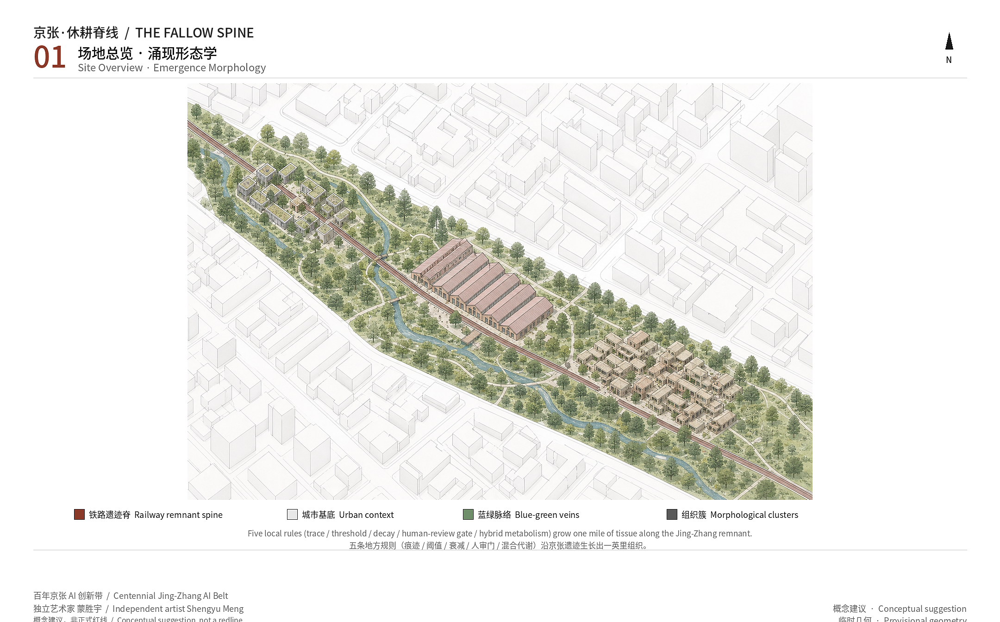

Overview map

Green = habitatRust = phenotypeVeins = traces
Emergence diagram (local Canvas)
Offline exercise: walkers, mycelium, and civic agents see only neighbour traces. The railway remnant is a weak terrain bias. Heritage-frozen cells cannot flip; high-risk flips enter the human-review gate. Complex pattern grows from local generators.
Loading local morphological exercise…
Experience film (no autoplay)
Overview map
Trace spine, three tissues, two wings, grown from one generator set.
Three-level scope
43.6 / 11.4 / 3.684 km² from the announcement; submitted geometry is provisional.
Key areas
Origin habitat, Zhongzhiyuan metabolism, Dazhongsi phenotype — three tissues of one generator set.

Land-use partition
The machine-audit layer uses MNR codes covering the submitted boundary; the design reading is tissue, not zoning.

Slow mobility
Developer Walk and Xiaoyuehe low-speed edge; not road redlines.
Blue-green public space
Jing-Zhang trace spine, water veins, Contribution Reef and Open Source Gallery accretions.

Buildings
Conceptual footprints only.
Renewal projects
Germination, metabolism, phenotypic-market phases.
AI scenarios
Desire lines, mycelial stormwater, campus ecology, reviewed robots.
Core metrics
Numbers are recomputed from submitted geometry; the metrics plate does not replace JSON.

Task coverage
公告 1.3–1.5 与 agent.1–agent.6 见Task coverage矩阵。
Self-check
Four-gate self-check is recorded after PASS.
Sources
Announcement, agent taskbook, provisional boundaries, public cases, bilingual morphological plates.
Assumptions
Official redlines, FAR, height, tenure, and utilities remain pending.